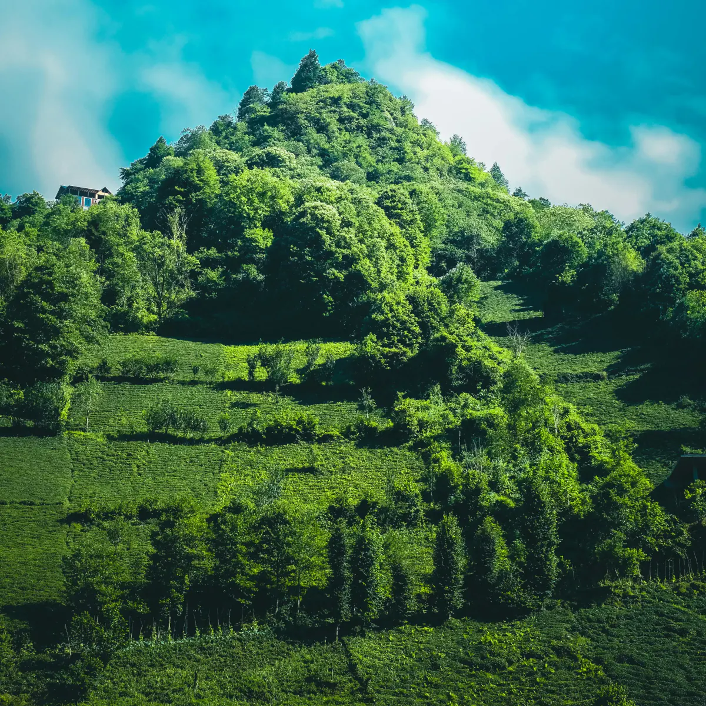

PARA FOTÓGRAFOS
La comunidad más grande de entusiastas
Comparte tu trabajo, descubre nuevas perspectivas y conecta con fotógrafos de todo el mundo.

San Cristóbal de las Casas

Río Kamniška Bistrica

Helianthus annuus

Todos Santos, Mexico

Sierra Madre Occidental

Meghalaya